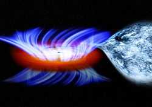
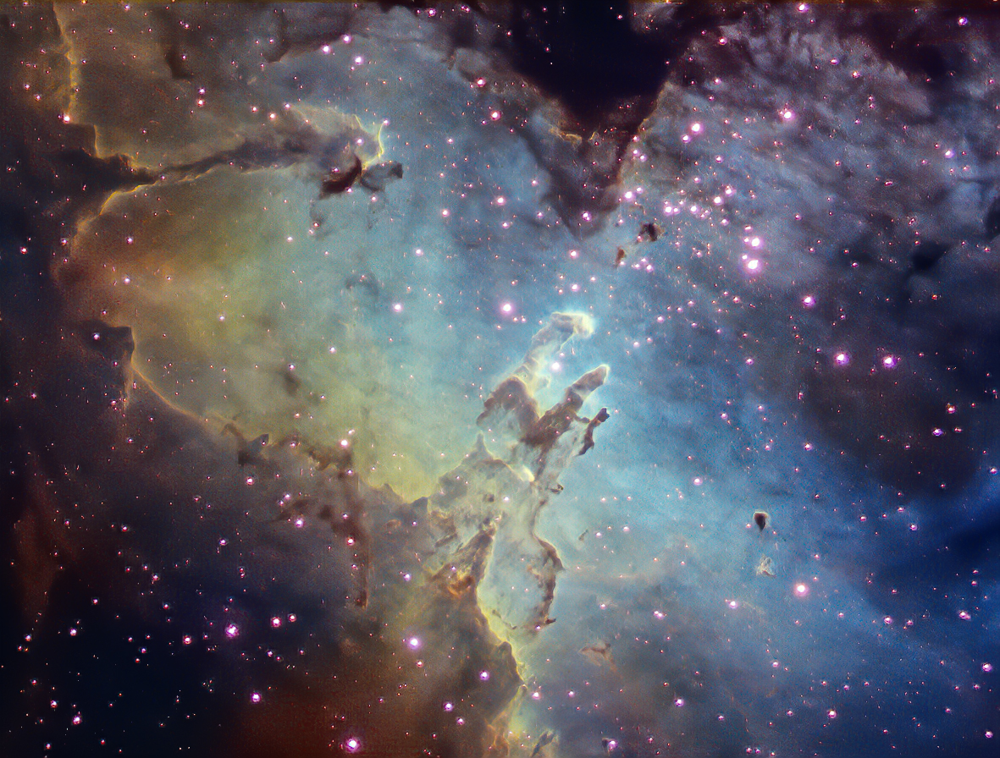

1. IGR J17091-3624
This is one of the most unique black holes (imo) it consists of a star orbiting a blackhole.
2. Space Jelly Fish

This is a space jelly! It is a phenomena caused by the gas from a rocket launch reflecting of sunlight in a night sky!
About our "foundation" Hello! Hopefully these amazing facts have caught your eye! Welcome to my page about the top 3 kinds of cellestial formations and or phenomenas. In my humble opinion you are most likely going to disagree. But thats okay because like the universe we are full of diversity! :)
3. Pillars of Creation
What makes these gaseous phenomena so special are the fact that they are in the process of making new stars! Hence The Pillars of Creation. This photo is a zoomed out photo from a telescope on Earth and not the famous hubble one that we all know!